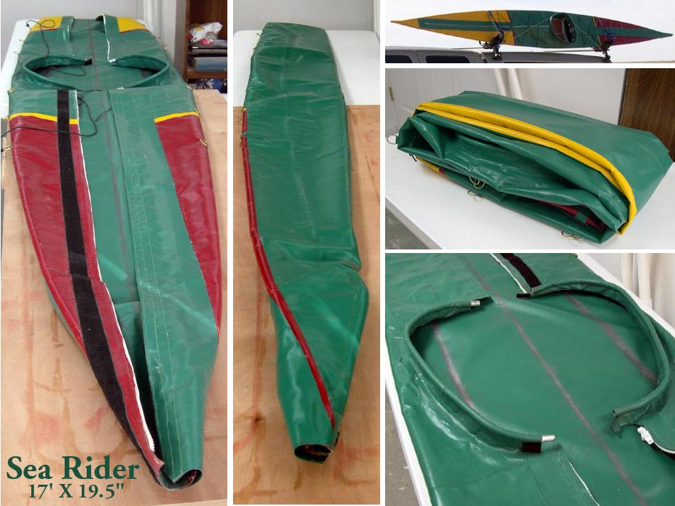

| Aluminum / Freestanding Coaming | Menu Last Page Next Page |
|

This is my favorite coaming, both for it's simplicity and it's utility. To fold the skin along with the aluminum tube coaming, first fold the skin in half lengthwise. The coaming halves will overlap. Next fold the skin in small sections along it's length. The folded size is about 28" Length X 13" Width X 6" height ( 71 X 33 X 15cm). The weight of this 18oz per square yard PVC skin with 2 deck zippers, deck rigging, and the 1/2" aluminum coaming is about 11 lbs ( 5kg). The cost to make this skin (as equipped) is under $100.00US. This glued Sea Rider skin is 2 years old and has seen a hundred hours of use with a small patch or two being the only maintenance required. This new page can be found in the Aluminum / Freestanding Coaming section of the manual. Use the {BACK} key to return.
|
|